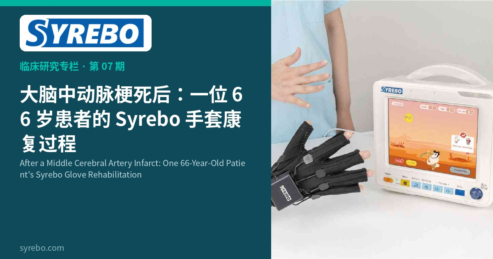

Rubrica di Ricerca Clinica Syrebo
Letture basate sull'evidenza sulla riabilitazione robotica della mano


A volte la storia riabilitativa completa dice più dei freddi numeri. Questo caso clinico documenta l’intero percorso di una donna di 66 anni sottoposta a riabilitazione con guanto Syrebo dopo un infarto nel territorio dell’arteria cerebrale media.
La paziente, una donna di 66 anni, ha ricevuto diagnosi di infarto bilaterale nel territorio dell’arteria cerebrale media. Dopo la stabilizzazione, ha ricevuto neurofisioterapia incentrata sul programma di riabilitazione con guanto Syrebo, e il resoconto registra i progressi osservati e i cambiamenti funzionali durante la riabilitazione.
Il valore di un caso clinico sta nel mostrare ciò che è accaduto in una persona: come un guanto robotico morbido sia stato usato, sotto guida professionale, nella riabilitazione quotidiana di una paziente dopo un grave infarto cerebrale. Per pazienti e famiglie che affrontano difficoltà simili, un resoconto del genere offre un genuino punto di riferimento.
Resoconto di un singolo caso; non generalizzabile.